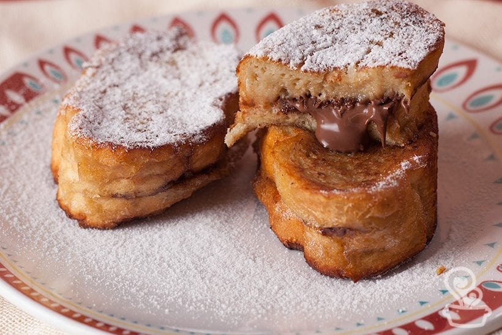

Rabanada Recheada

Ingredientes
- Pão de Rabanada ou Pão Francês
- 150g de doce de leite
- 1x de leite
- 3 ovos
- 1/2 lata de leite condensado
- 1 litro de oleo
- 1x de açucar refinado
- 1c (sopa) de canela em pó
- Corte os pães em rodelas
- Corte as rodelas no centro
- Recheie o pão com o doce de leite
- Misture os ovos e o leite condensado em um recipiente
- Passe os pães na mistura
- Na sequência, frite-as em óleo quente
- Finalize passando na mistura de canela e açúcar
Ajudas
- Tamanho do pão:
- Corte os pães com aproximadamente 2 dedos de largura.
- Outros Recheios:
- Pode ser utilizado nutella, creme de confeteiro, brigadeiro...
- Mistura ovo e leite condensado:
- Se tiver essência de baunilha tambêm pode ser acrescentado uma gota.
- Fritura:
- Frite até que fiquem bem douradas.
Desenvolvido por Bruno Travassos